Los 12 clips de la arena (17 animaciones; 11 hechas en low-poly). Hecho: 7 · A rehacer: 5. Las tomas del set costaron US$ 10,63 (aparte, el bake-off de estrategias del idle: US$ 9,00, en compare.html). Los dos personajes se muestran con el cuerpo a 150 px en pantalla: el ranger sale a 128 px y el low-poly a 256.
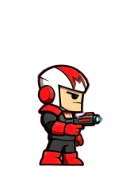
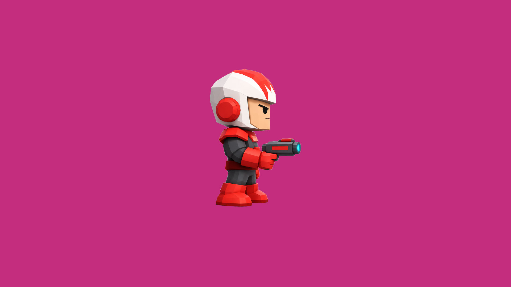
Toma 2 del idle A de Kling. El bake-off de estrategias (A, B, C) está en compare.html.
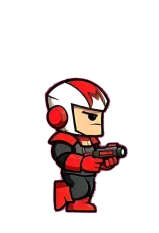
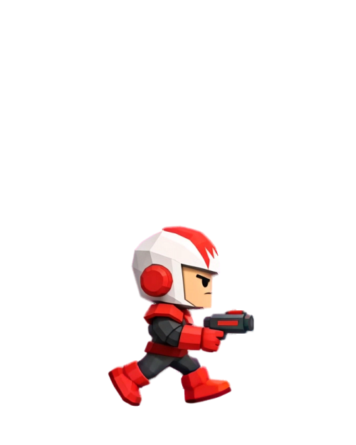
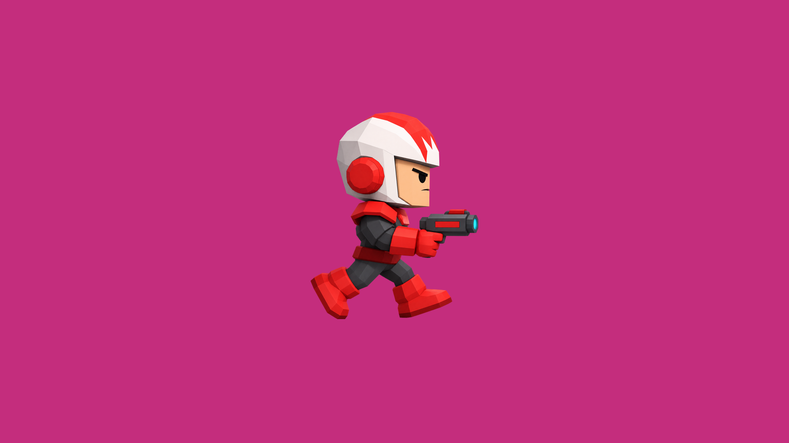
Toma 2. Kling dispara sin pedirlo: remove_flash con method = shape borra los rayos sin comerse la boca.
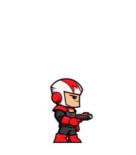
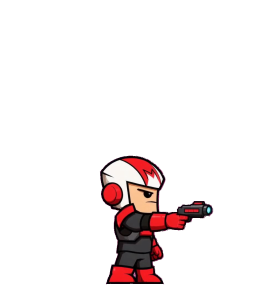
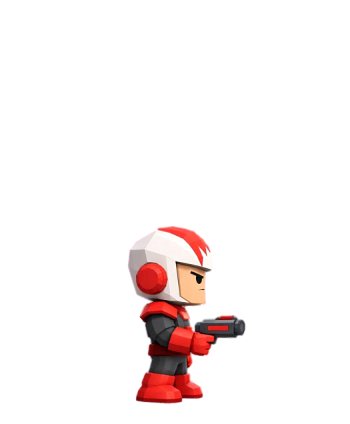
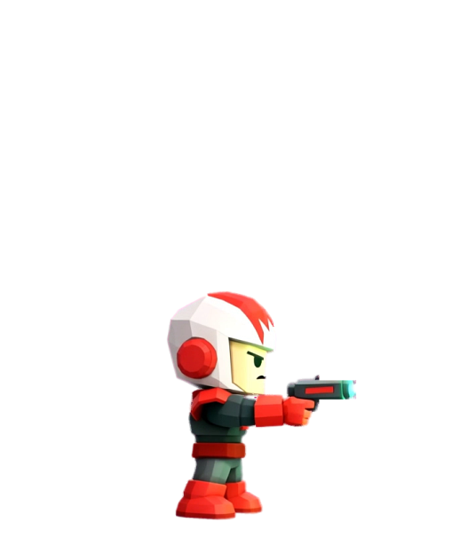
Tanda 2: el video sólo apunta, con el arma apagada; el retroceso, el fogonazo y el disco cian los pone el juego. Kling metió un fogonazo en 2 cuadros (14-15), que quedan afuera del recorte.
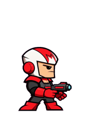
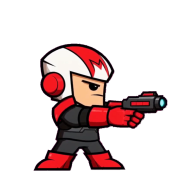
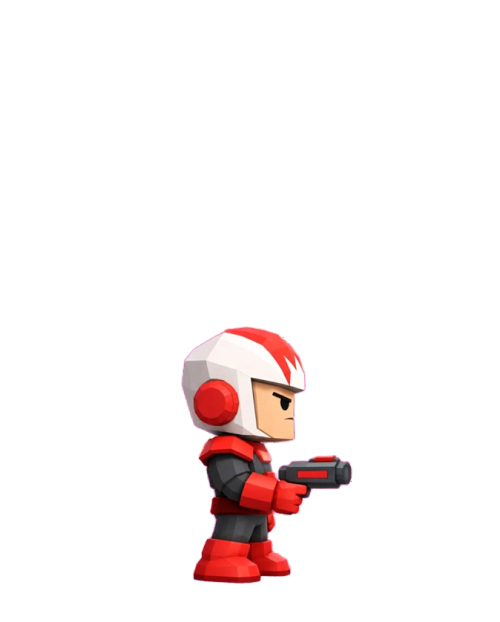
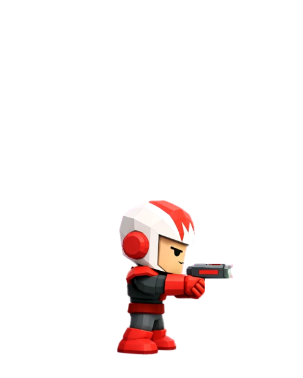
Tanda 2: apunta con las dos manos, sin ningún fogonazo.
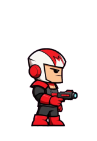
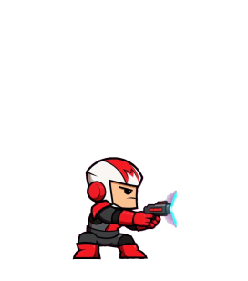
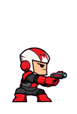
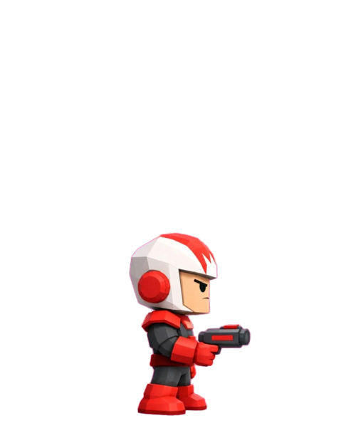
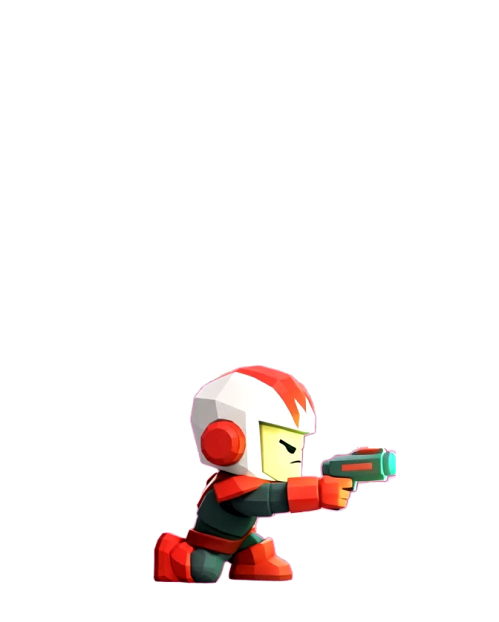
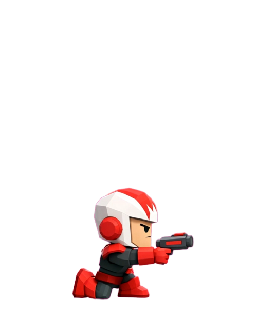
Tanda 2: se agacha, apunta quieto y se para, sin resplandor. Kling dispara en el medio (45-86): ese tramo queda afuera.
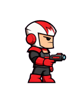
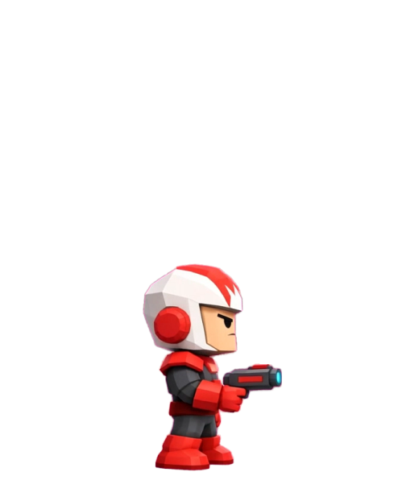
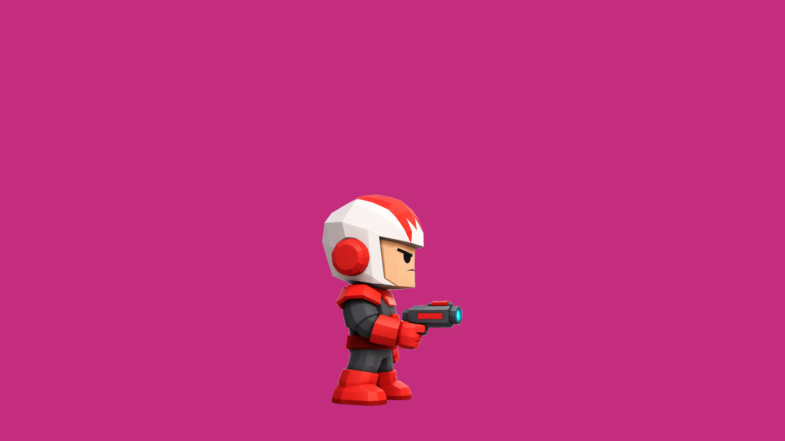
Toma 1, un salto entero (cuadros 4–24); el segundo salto dispara y quedó afuera.
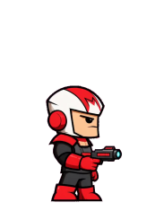
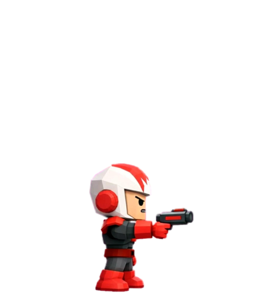
Toma 1. Dispara arriba del salto; queda un brillo chico en la boca en 2 cuadros.
Revisión de Pablo: Muy sucio por el fogonazo. Tanda 2 (salto con el brazo ya estirado y el arma apagada): Kling igual dispara en el aire en las dos tomas.
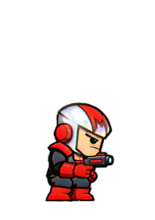
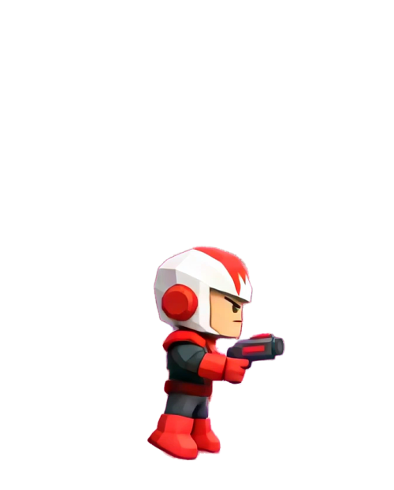
Toma 2, el primer mortal (22–42). El cuadro del medio de la vuelta sale borroso desde el video (motion blur de Kling).
Revisión de Pablo: Glitches: en los cuadros 3, 5 y 10 Kling deforma al personaje mientras gira (una mancha, no un mortal).
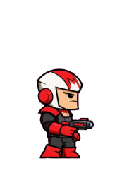
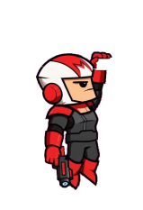
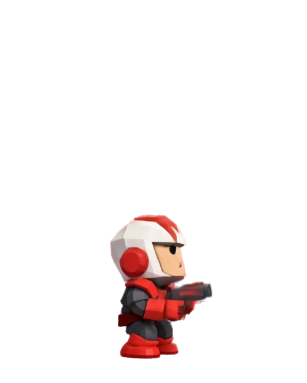
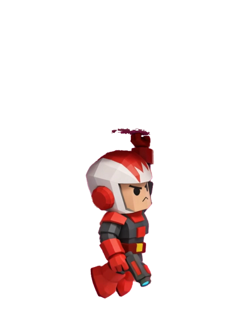
Toma 2. Kling dibuja la cornisa: prop_rows la borra casi toda; quedan restos chicos arriba de la mano y en el cuadro del agarre.
Revisión de Pablo: Mucha basura de la cornisa donde se cuelga.
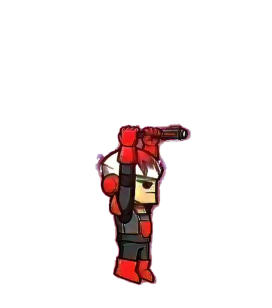
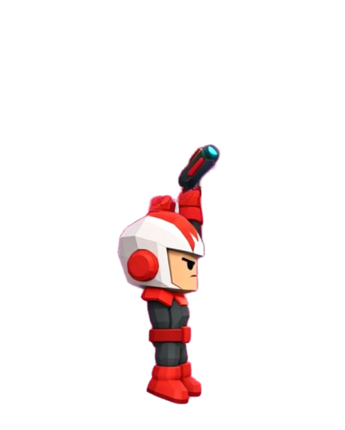
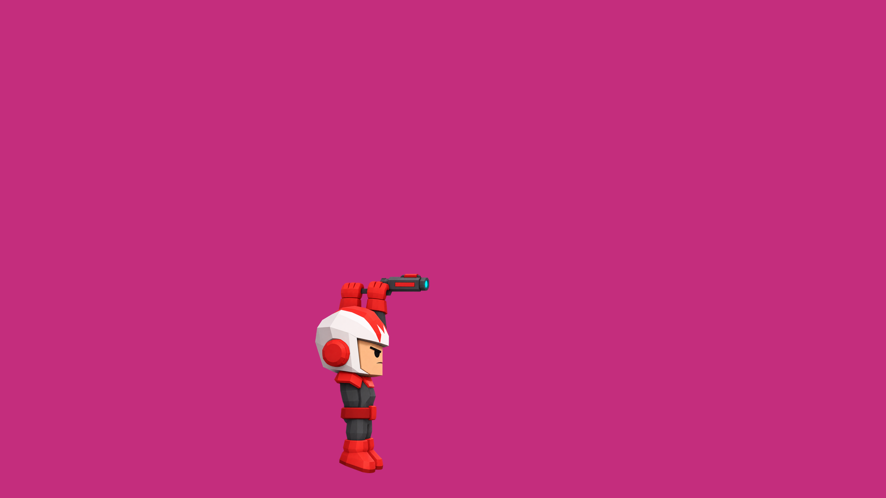
Toma 1 (la 2 da una vuelta de cabeza). Incluye la pose colgada (US$0,36, GPT Image 2.5 #2) y subida_frames.py.
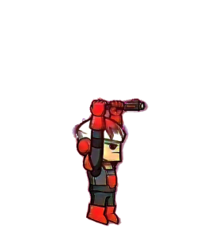
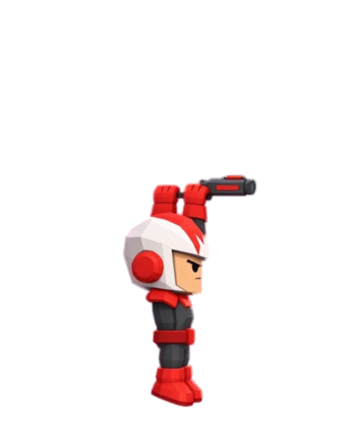
Toma 2 (la 1 dispara). Loop cerrado: el clip entero.
Revisión de Pablo: El arma queda apoyada arriba de las manos: en el juego se ve sobre la cornisa.
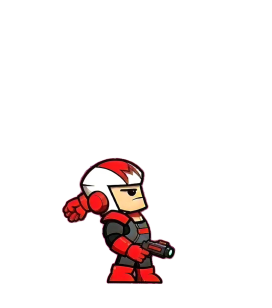
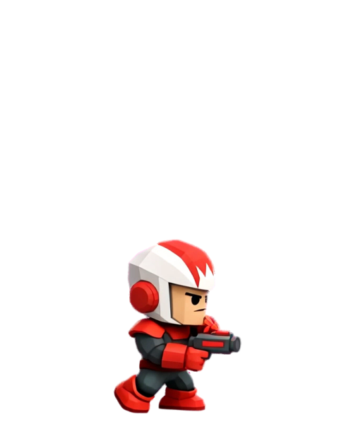
Toma 2 (en la 1 dispara en vez de tirar). Se lee el tiro, pero gira hacia cámara mientras tira.
Revisión de Pablo: No parece que tire nada.